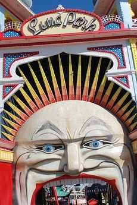
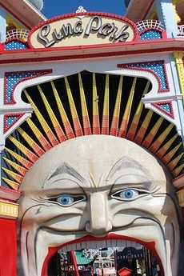

Where New Yorkers Go To Play !
The Bronx Zoo
We go to The Bronx Zoo for the beautiful, funny and attention grabbing animals of course but new this year are the Treetop Adventure and Nature Trek.
The Treetop Adventure zips you 50 feet above the Bronx River for 400 feet before sending you back for the return trip.
The Nature Trek for all ages includes family-friendly netted bridge-and-tower course featuring five towers that are up to two stories high and connected by 12 different bridges spanning up to 30 feet. The trek requires balancing on narrow beams, weaving between vertical barriers, stretching across wide steps, and climbing on wiggling surfaces.
Coney Island, Brooklyn
 

Historic Coney Island home of the Cyclone Rollercoaster has experienced a rebirth. Luna Park formerly Astroland opened in 2010 with great anticipation and fanfare. New Yorkers and tourist are enjoying new rides including Thunderbolt with speeds up to 55 mph and a 90 degree verticle drop.
The famous wooden coaster The Cyclone is still packing them in after 90 years. With speeds up to 60 mph and 60 foot drops The Cyclone is still a must do when visiting Coney Island.
Don't leave without visiting the renovated Boardwalk, where you can enjoy the warm sun, ocean breeze and a cool drink.
Central Park, Manhattan
Central Park is 843 acres, from 59th Street to 110th Street between 5th Avenue and Central Park West. Oh my, where do we start in this size playground?
With over 25 million visitors per year, 21 playgrounds, the amazing Great Lawn visitors can walk, jog, bikeride or just lounge the day away.
Central Park is home to the Central Park Zoo, Rumsey Playfield which will once again host Ozy Fest with music, comedy and delicious food from celebrity chef. With such various activities to enjoy a day spent in Central Park is a trip around the world.